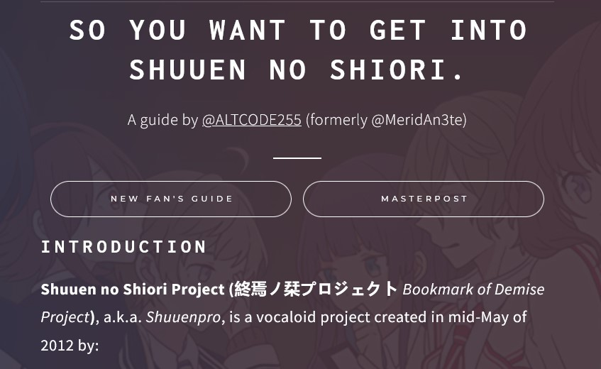

Shuuen no Shiori Masterpost / Guide - NOV 4 2019 -> PRESENT


*Click on image to be redirected to its source
[Shuuen no Shiori] Monologue to a Silenced Storyteller (1.7k words) - MAR 8 2023
E-noru visits the hospital, and has a one-sided conversation with someone who can't respond.
He never truly knew his uncle, yet he lives the consequences of his story.
More small coding projects can be found on my Github page.
| Project | Description | Preview |
|---|---|---|
| Week of Demise (Shuuen no Shiori Art Week) - SUMMER 2019 -> SUMMER 2021 | Art week hosted every year with a choice of different single-word prompts. |
|
Shuuen no Shiori Masterpost / Guide - NOV 4 2019 -> PRESENT |
Compilation of Shuuen masterlists to help old and new fans get into the series. Made with Carrd. |  |
| The S-Word Counter / #namelessbot (Twitter Bot) - JAN 17 2022 -> PRESENT | Twitter bot that, every night, reports the number of times I've said the words "Shuuen" or "Sonic" that day. Data is extracted from a Google Sheet, automation done using Microsoft Power Automate. Some scripting in the Google Sheets itself using Google Apps Script (Javascript). |
|
| 30s Shuuen Music (Twitter Bot) - FEB 15 2022 -> PRESENT | Twitter bot that posts trimmed clips of Shuuen no Shiori tracks every hour. Made with Cheap Bots Done Quick. |
|
| FISHEYE 🔍🐠 (Discord Bot) - APRIL 9 2022 -> PRESENT | A (currently semi-public, used in Shuuen no Shiori discord) Discord bot that functions as a tool to notify / DM users when a keyword of their choosing is mentioned in any message. Coded in Python using discord.py. | |